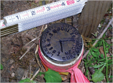

Burgess Boundary Line Adjustment
This survey, for the redefining of property lines between Subdivision Lots, included a boundary survey and topographic mapping of two adjoining properties. It included locating property lines, utilities, structures, and right-of-way for NE 108th Avenue and NE Russell Street within the Portland, Oregon City limits.
Discount Tire of Tigard
The purpose of this survey was to locate the site, utilities, and right-of-way of Highway 99 within the Tigard, Oregon City limits for the design and construction of a retail store.
Discount Tire of Vancouver
Bluedot was contracted to create an ALTA map of the project site, utilities, easements, lease agreements, CC&Rs, and right-of-ways for SE Mill Plain Boulevard and SE 148th Avenue in Vancouver, Washington for the design and construction of a retail store.
Crossroads Church of Portland
A boundary survey and topographic mapping of the parking area, utilities, trees, buildings, and right-of-way for I- 205 and NE 102nd Avenue. This survey was for the design and construction of an addition to the church, school, parking lot, and community food bank. Bluedot Group also provided construction staking support to the contractor.
Multnomah Presbyterian Church of Beaverton
A boundary survey and topographic mapping of the parking area, utilities, trees, buildings, and right-of-way for SW 45th Avenue. This survey was for the design and construction of an addition to the church and parking lot.
I-205 Commerce Park
Bluedot was contracted to supply boundary survey, topographic mapping, and layout a multi-lot subdivision for the purpose of commercial property rentals with “potentially shifting internal boundary lines.”
Debora Place Subdivision
Bluedot supplied topographic mapping, boundary survey, and subdivision platting for this four lot residential subdivision and private cul-de-sac in Beaverton, OR.
Quatama Town Homes
An 84 lot townhome subdivision with four private streets and a common green space nestled between NW Quatama Road and the Tri-Met Westside Light Rail right of way in Hillsboro, Oregon. In addition to topographic mapping , boundary survey, and platting, Bluedot Group provided construction staking support.
Touchstone Townhomes
This project was for a phased condominium complex. Two structures holding 18 separate units for private residences and the construction of two private roads have been completed to date. Tasks involved determining the property boundary as well as individual unit boundaries, defining general common areas, and limited common areas for utilities within shared wall spaces, and construction staking.
Timbercrest Condominiums
This project was a condominium conversion of an existing apartment complex of 35 units under single ownership, to be divided into 35 units for individual ownership. Tasks involved determining the property boundary as well as individual unit boundaries, defining utility easements, general common areas, and limited common areas for utilities within shared wall spaces.
Information on land surveying and mapping for
our private sector clients
Bluedot has extensive experience performing boundary, topographic, and ALTA Surveys for private sector clients. Typical work includes research into public records, liaison with public agencies and utility companies, comprehensive field work, professional analysis of the data, and detailed mapping and reporting of findings.
Topographic Maps detail the extent and location of improvements on the land usually combined with the roll of the land itself. This “roll of the land” is often expressed in the form of contours. Underground features, such as storm drains, sanitary sewers, water and natural gas lines, and cable ducts may also be included. Mapping of this kind is essential to architects and engineers seeking to design new improvements or additions to existing ones.
The laws of the State of Oregon require that every boundary survey be memorialized by a map, known as a “Record of Survey”, and that the map be filed in the records of the appropriate County Surveyor. Such maps also serve the purpose of making your survey part of the public record, giving your neighbors constructive notice of the location of your property lines. The filing of a “Record of Survey” map greatly reduces the chance of future boundary disputes and facilitates the restoration of property boundary monuments, if such monuments become lost or destroyed. Every boundary survey begins with a check of the County Surveyors’ cache of Records of Survey from years gone by. In some areas the record goes back to the earliest pioneer times.
An “ALTA Survey” is one performed in accordance with standards agreed to by the American Land Title Association and the National Society of Professional Surveyors. These standards specify the elements which the Surveyor will include on the map and the degree of accuracy to which they will be located. The standards also assign certain responsibilities of disclosure to the owner of the property under consideration. ALTA Surveys are typically requested by mortgage lenders on commercial properties.
The current ALTA Survey standards, approved in 2005, are available at www.nspsmo.org and at www.alta.org.
Subdivisions Plats are maps that are used to divide property into new lots. A Partition Plat is a specific kind of Subdivision Map, one that creates 3 or less lots. The approval process for subdivisions usually requires the surveyor to work in close cooperation with a planner, an architect, a civil engineer, and perhaps other consultants.